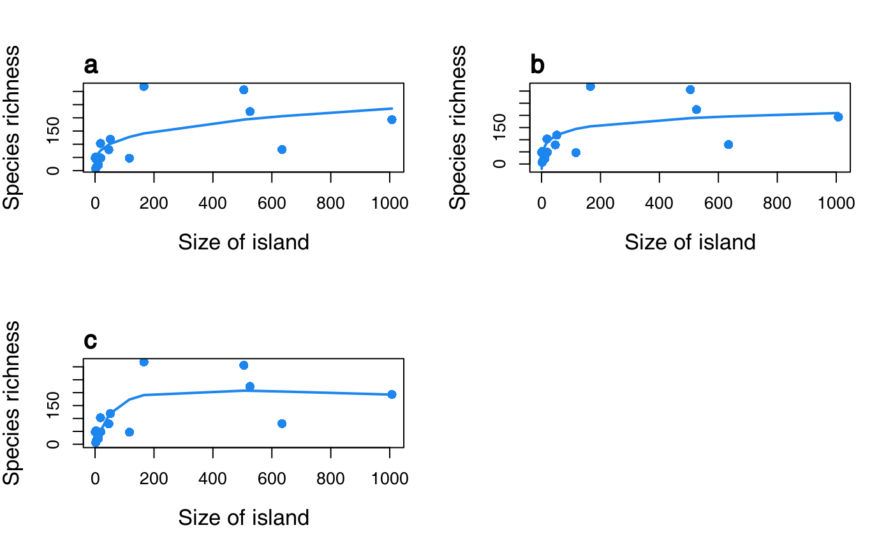

S3 method for class 'sars'. plot.sars creates plots
for objects of class 'sars' (type = 'fit', "lin_pow' and
'fit_collection'), using the R base plotting framework. The exact
plot(s) constructed depends on the 'Type' attribute of the 'sars'
object. For example, for a 'sars' object of Type 'fit', the
plot.sars function returns a plot of the model fit (line) and the
observed richness values (points). For a 'sars' object of Type
'fit_collection' the plot.sars function returns either a grid
with n individual plots (corresponding to the n model fits in the
fit_collection), or a single plot with all n model fits included.
For plotting a 'sar_average' object, see plot.multi.
# S3 method for sars plot(x, mfplot = FALSE, xlab = NULL, ylab = NULL, pch = 16, cex = 1.2, pcol = "dodgerblue2", ModTitle = NULL, TiAdj = 0, TiLine = 0.5, cex.main = 1.5, cex.lab = 1.3, cex.axis = 1, yRange = NULL, lwd = 2, lcol = "dodgerblue2", di = NULL, pLeg = FALSE, ...)
Arguments
| x | An object of class 'sars'. |
|---|---|
| mfplot | Logical argument specifying whether the model fits in a
fit_collection should be plotted on one single plot ( |
| xlab | Title for the x-axis (default depends on the Type attribute). |
| ylab | Title for the y-axis (default depends on the Type attribute). |
| pch | Plotting character (for points). |
| cex | A numerical vector giving the amount by which plotting symbols (points) should be scaled relative to the default. |
| pcol | Colour of the points. |
| ModTitle | Plot title (default is |
| TiAdj | Which way the plot title is justified. |
| TiLine | Places the plot title this many lines outwards from the plot edge. |
| cex.main | The amount by which the plot title should be scaled relative to the default. |
| cex.lab | The amount by which the axis titles should be scaled relative to the default. |
| cex.axis | The amount by which the axis labels should be scaled relative to the default. |
| yRange | The range of the y-axis. |
| lwd | Line width. |
| lcol | Line colour. |
| di | Dimensions to be passed to |
| pLeg | Logical argument specifying whether or not the legend should be
plotted for fit_collection plots (when |
| ... | Further graphical parameters (see
|
Examples
data(galap) #fit and plot a sars object of Type fit. fit <- sar_power(galap) plot(fit, ModTitle = "A)", lcol = "blue")#fit and plot a sars object of Type fit_collection. fc <- sar_multi(data = galap, obj = c("power", "loga", "epm1"))#> #> Now attempting to fit the 3 SAR models: #> #> ── multi_sars ────────────────────────────────────────────── multi-model SAR ── #> → power : ✔ #> → loga : ✔ #> → epm1 : ✔